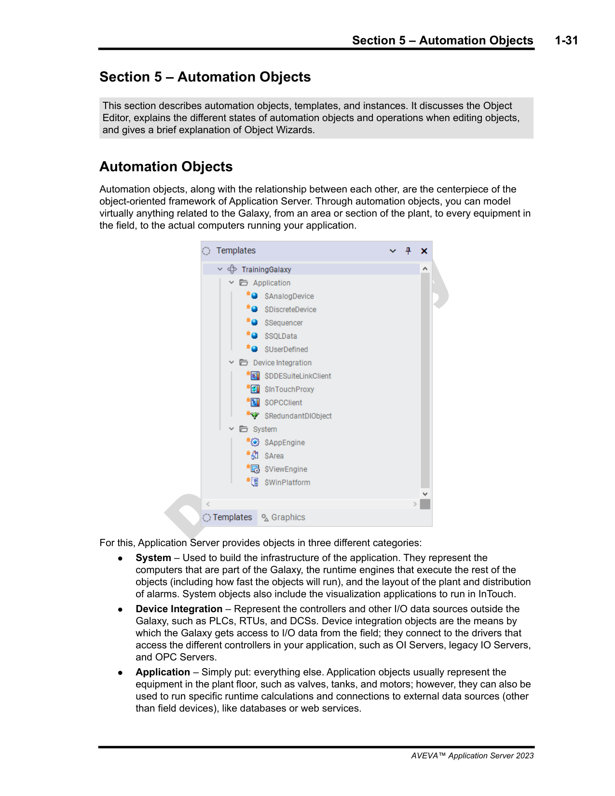
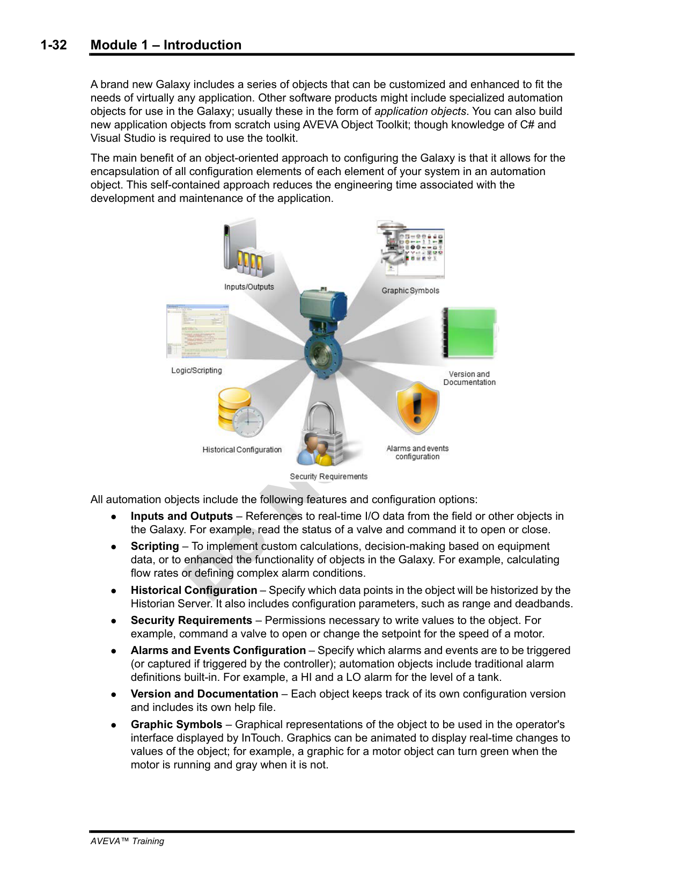
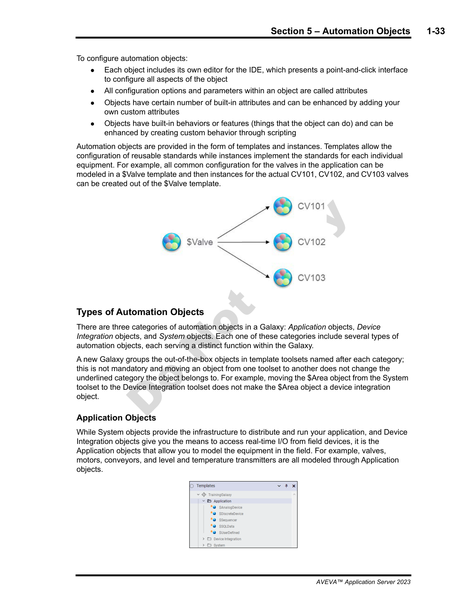
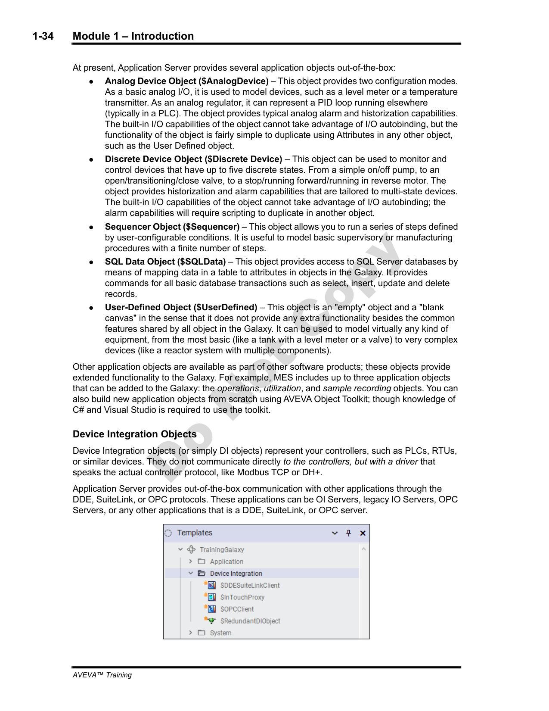
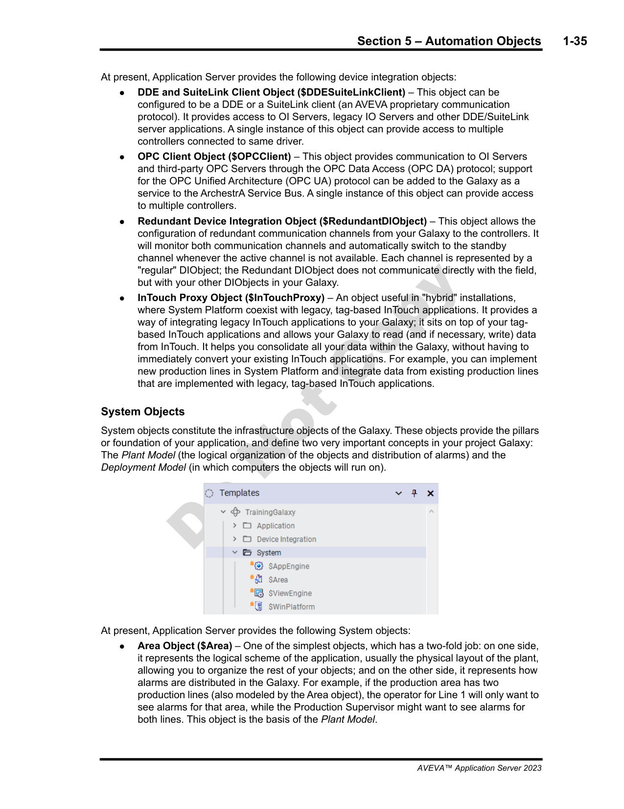
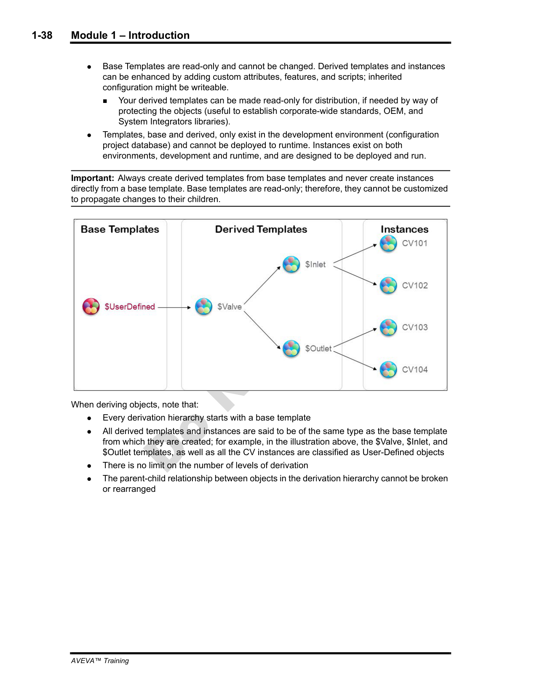
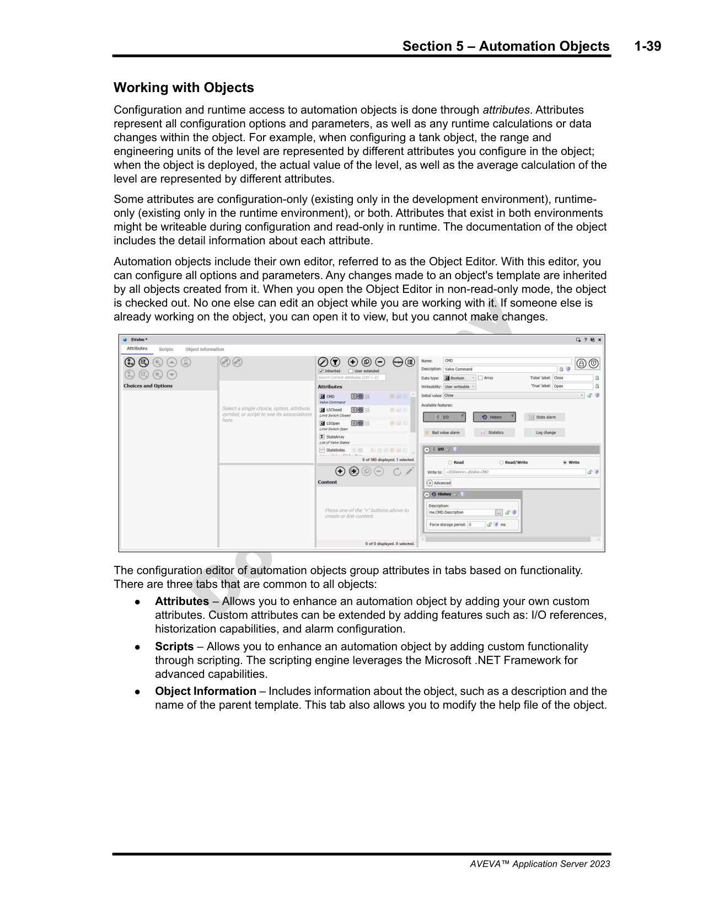
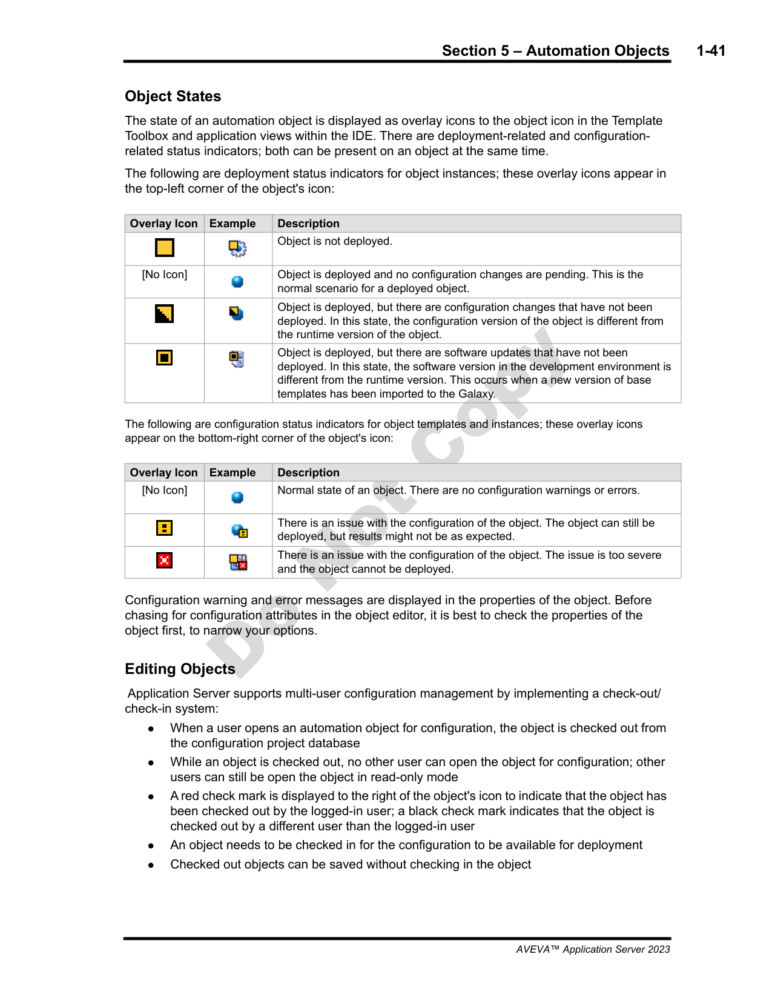

Based on Module 1, Section 5: Automation Objects (pages 1-31 to 1-42)
In the AVEVA Application Server, everything in the system is an object. From the simplest I/O tag to the most complex alarm engine, the automation object is the fundamental building block of the entire platform. Understanding how these objects are structured, how they relate to one another, and how you configure them is essential before building any application.
Source: page 1-31
All automation objects in AVEVA Application Server belong to one of three categories. These categories are clearly visible in the Templates pane of the IDE:
| Category | Purpose | Examples |
|---|---|---|
| System | Platform, engine, and model infrastructure objects — the backbone of the runtime | $Area, $WinPlatform, $AppEngine, $ViewEngine |
| Device Integration (DI) | Objects that connect to external data sources and PLCs | $DDESuiteLinkClient, $OPCClient, $RedundantDIObject |
| Application | Objects that model process equipment and logic — the objects you build your system with | $Valve, $AnalogDevice, $DiscreteDevice, $UserDefined |

Source: page 1-32
Every automation object — regardless of type — is an encapsulated entity. This means that all the functionality needed to represent a real-world device or piece of logic lives inside the object itself. No external scripting, no separate databases, no disconnected alarm configurations.
A single automation object encapsulates seven functional areas:
| # | Function | Description |
|---|---|---|
| 1 | I/O | Input and output connections — how the object reads from and writes to the process or data sources |
| 2 | Scripting | Internal logic and calculations — scripts that execute on scan cycles or on events |
| 3 | History | Data logging and historical recording configuration |
| 4 | Security | Access control — who can view, modify, or operate this object |
| 5 | Alarms | Alarm generation, classification, and notification rules |
| 6 | Version / Documentation | Built-in versioning, check-out/check-in tracking, and documentation fields |
| 7 | Graphics | Linkage to graphical symbols for display in HMI screens |

Source: page 1-33
Every automation object is configured through its attributes. Attributes are the named properties that define an object's behavior — things like scan rate, alarm limits, engineering units, and I/O addresses.
$Valve has a PV, a Mode, and a Command attribute, because those are part of the template definition.Location attribute to track where a valve is installed.The Application Server uses a template-instance architecture. You do not create objects from scratch. Instead:
$Valve)CV101, CV102, CV103)
The Object Editor is the primary interface for configuring an object's attributes. You access it by double-clicking any object in the Object Viewer or by right-clicking and choosing Edit. We will explore it in detail in Section 8 below.
Source: page 1-34
Application objects are the templates you use to model real-world process equipment and logic. The Application Server ships with several pre-built application templates:
| Template | Description |
|---|---|
$AnalogDevice |
Represents an analog (continuous) point. Has 2 modes of operation: I/O connected (live data from a field device) and Calculated (computed from other attributes via script). |
$DiscreteDevice |
Represents a discrete (on/off) point. Supports 5 states: e.g., Open, Closed, Opening, Closing, and Fault — or any custom state labels. |
$Sequencer |
Implements sequential logic — step-by-step operations such as batch sequences or equipment startup procedures. |
$SQLData |
Connects to SQL databases to read and write data — useful for integrating with MES, LIMS, or ERP systems. |
$UserDefined |
A blank canvas — a template with no pre-built behavior. You define everything from scratch. Ideal for custom logic or unique equipment types. |

Source: page 1-35
Device Integration (DI) objects provide the bridge between the Application Server and external data sources. They live in the Device Integration category of the Templates pane:
| Template | Purpose |
|---|---|
$DDESuiteLinkClient |
Connects to devices using DDE (Dynamic Data Exchange) or SuiteLink protocols — commonly used with InTouch HMI tags and Wonderware-compatible PLCs. |
$OPCClient |
Connects to OPC servers (OPC DA or OPC UA) to read/write data from PLCs, RTUs, and other industrial controllers. |
$RedundantDIObject |
A wrapper that provides automatic failover between two DI connections — ensuring data continuity if the primary path fails. |
$InTouchProxy |
Acts as a proxy for InTouch tag data — allowing the Application Server to access InTouch window variables and tags. |

$WinPlatform object (part of the Deployment Model) and are referenced by Application objects that need their data connectivity.
Source: page 1-35 (continued)
System objects form the infrastructure that the Application Server needs to run. They define the Plant Model, the Deployment Model, and the runtime engines.
| Template | Role | Key Details |
|---|---|---|
$Area |
Plant Model element + alarm distribution | Represents a physical or logical area of the plant. Also serves as the node through which alarms are distributed to downstream consumers (e.g., displays, alarm printers). |
$WinPlatform |
Deployment Model element | Represents a deployment target (a Windows machine or server). Application objects are deployed to a platform. DI objects live under the platform. |
$AppEngine |
Runtime scan engine | Executes object scripts and handles I/O scanning. Configurable scan period from 10 ms to 1 hour. Multiple engines can run on a single platform for workload distribution. |
$ViewApp |
Runtime HMI application | Represents a running HMI application instance — the container for graphics, displays, and operator interaction. |
$ViewEngine |
Graphics rendering engine | The engine that renders graphics and manages display performance. |
$InTouchViewApp |
InTouch compatibility layer | Provides backward compatibility with legacy InTouch applications and window scripts. |
$Area is unique in that it serves a dual purpose — it organizes your Plant Model hierarchy and it manages alarm distribution. If you need alarms to reach an operator display, that display's area must be a child (or descendant) of the area where the alarm is generated.
$AppEngine scan period affects both I/O polling and script execution. Setting it too slow (e.g., 1 hour) means your scripts only run once an hour. Setting it too fast (e.g., 10 ms) on a large engine can overload the CPU. Choose wisely based on your actual control requirements.
Source: pages 1-36 to 1-38
Understanding the distinction between templates and instances — and between the different kinds of templates — is one of the most important concepts in the Application Server.
| Level | Description | Editability | Created By |
|---|---|---|---|
| Base Template | The original template shipped with the system (e.g., $Valve, $AnalogDevice) |
Read-only — cannot be modified in the IDE | AVEVA / Object Toolkit |
| Derived Template | A customized version of a base template, created in the IDE for your specific plant | Writeable — you add/modify attributes, scripts, alarms | You, in the IDE |
| Instance | A runtime object created from a derived template — represents actual equipment | Attribute values can be overridden; structure comes from template | You, in the IDE (deployed to runtime) |
Templates can be derived from other templates, forming a hierarchy. Each level inherits all attributes from its parent and can add new ones or override defaults. The hierarchy might look like this:
$Valve ← Base Template (read-only, built into the system)
└─ $GateValve ← Derived Template (your customized version)
└─ V101 ← Instance (actual valve in the field)
└─ V102 ← Instance (another valve)
└─ V103 ← Instance (another valve)

PV attribute from CV101.Source: page 1-39
The Object Editor is the primary interface for configuring any automation object. You open it by double-clicking an object in the Object Viewer, or by right-clicking and selecting Edit. It has three main tabs:

The Application Server includes a built-in version control system. Before you can modify an object's attributes or scripts, you must check it out. This locks the object so that no other developer can edit it simultaneously. When you are done, you check it in, which saves your changes and releases the lock.
Source: pages 1-41 to 1-42
The Object Viewer uses a system of icons and indicators next to each object to communicate its current state. Learning to read these indicators is essential for troubleshooting and for understanding what has been deployed vs. what is still in development.
| Indicator | Meaning |
|---|---|
| 🟢 Green circle | Object is deployed and running normally |
| ⬛ Yellow square | Object is deployed but not currently running (deployed to platform but engine not started) |
| ⬆️⬇️ Arrows (up/down) | Object is being deployed or undeployed (transition state) |
| Indicator | Meaning |
|---|---|
| ❗ Blue exclamation mark | Object has been modified but the changes have not yet been deployed — the running version differs from the configured version |
| ❌ Red X | Object has a configuration error — something is preventing it from being deployed (e.g., missing required attribute, broken I/O connection) |
| Indicator | Meaning |
|---|---|
| 🔴 Red check mark | Object is checked out by you (current developer) — you have exclusive edit access |
| ⬛ Black check mark | Object is checked out by another developer — you cannot modify it until they check it back in |

Source: page 1-42
Creating instances from complex template hierarchies can involve many steps. Object Wizards provide a simplified, guided interface for this process.
Q1: What are the three categories of automation objects in the Application Server?
A: System, Device Integration, and Application.
Q2: Name the seven functional areas encapsulated within every automation object.
A: I/O, Scripting, History, Security, Alarms, Version/Documentation, and Graphics.
Q3: What is the difference between a base template and a derived template?
A: A base template is shipped with the system and is read-only (cannot be modified in the IDE). A derived template is created by the developer from a base template and is fully writeable — you can add attributes, scripts, alarms, and customize it for your plant.
Q4: In the Object Viewer, what does a blue exclamation mark next to an object indicate?
A: The object has been modified but the changes have not been deployed to the runtime. The running version differs from the configured version.
Q5: What is the scan period range for a $AppEngine object?
A: 10 ms to 1 hour.
End of Lesson 3 — AVEVA Application Server Training